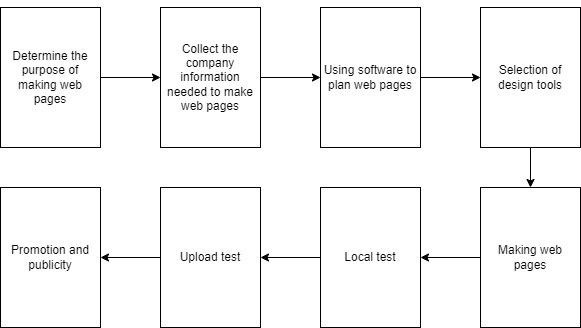
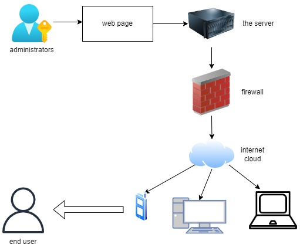

Make the company's website so that visitors can understand the company's projects.
Required software: Notepad, codepen. Required hardware: server, PC
The website can directly and accurately provide information for visitors, bring good visual effects to users, and play the role of external publicity. The website can improve the popularity of brands and products, so as to improve the sales performance of the company.
The website contains the company's background, the company's projects, the fields involved in the company, and the success of the company. At the bottom is the contact information of the company department, which is convenient for visitors to contact the company.
| software | Notepad | codepen |
| hardware | the server | PC |
| the server | HP ProLiant DL380 Gen10 | PowerEdge T150 |
system diagram
process diagram
